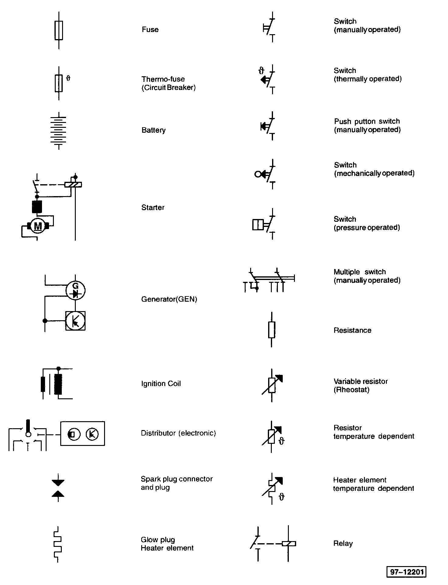
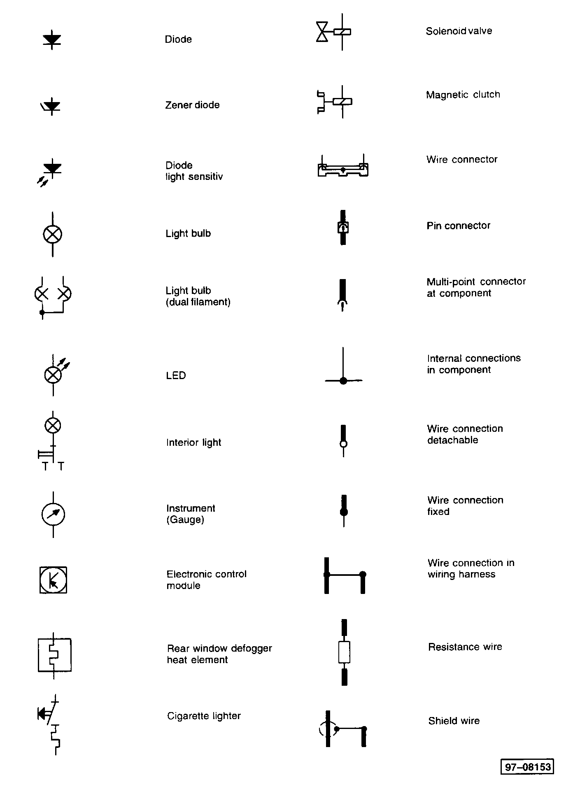
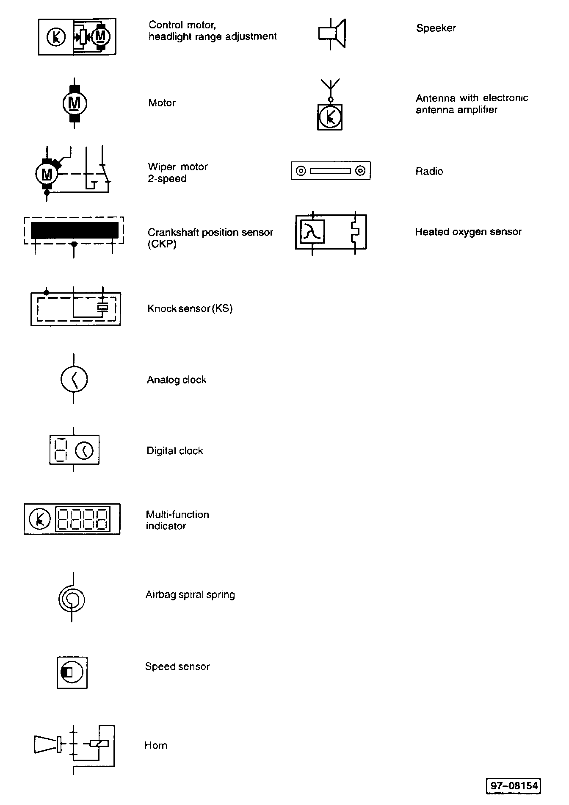

LEMON Manuals
: Even more car manuals for everyone: 1960-2025
Home
>>
Volkswagen
>>
2004
>>
Touareg (7LA) V6-3.2L (BAA)
>>
Repair and Diagnosis
>>
Powertrain Management
>>
Computers and Control Systems
>>
Sensors and Switches - Computers and Control Systems
>>
Throttle Position Sensor
>>
Diagrams
>>
Diagram Information and Instructions
>>
Symbols Used In Wiring Diagrams
Symbols Used In Wiring Diagrams
Part 1:

Part 2:

Part 3:
